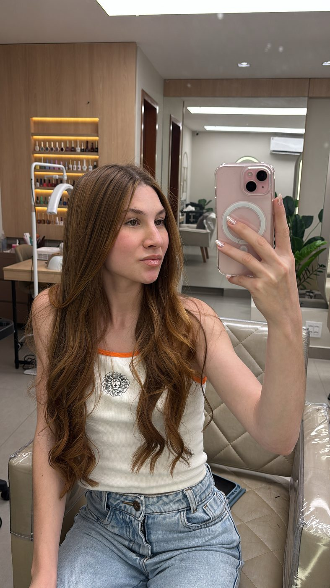
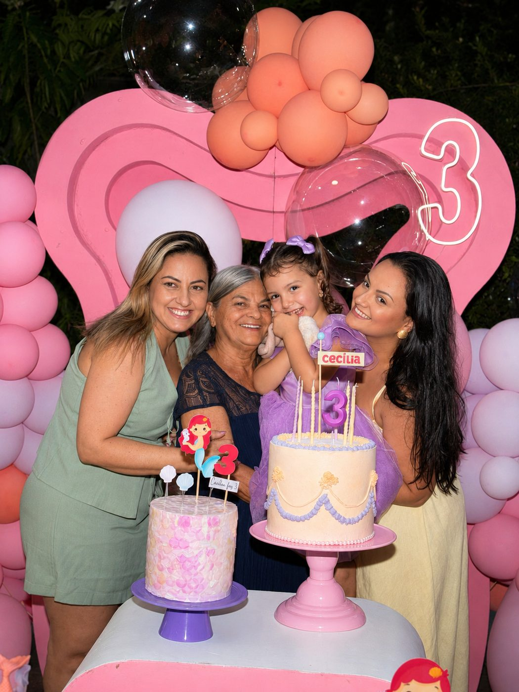
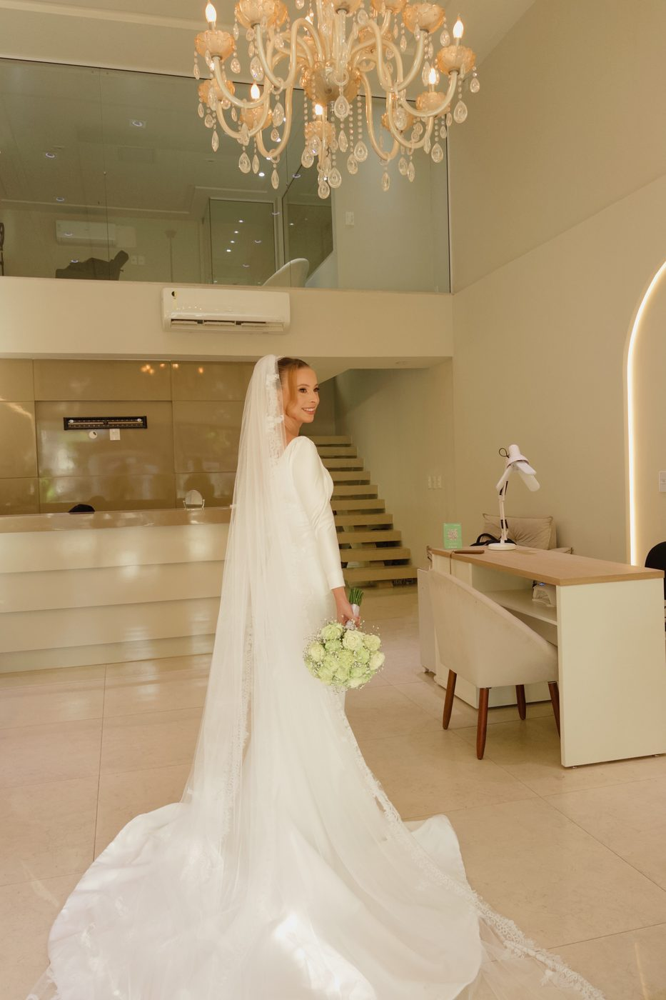
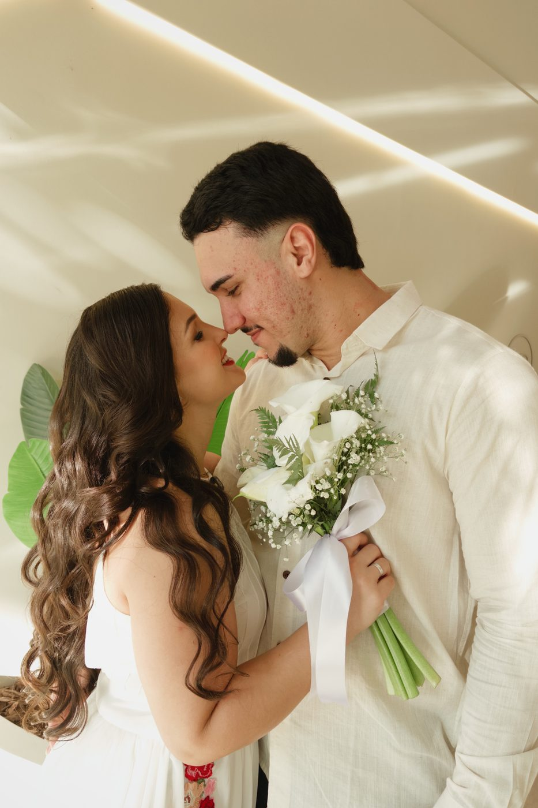

Conteúdo, imagem e presença digital
Sua história merece aparecer com intenção
Da estratégia de redes sociais à cobertura de eventos e fotos autênticas — tudo para contar a sua história com verdade.

Sobre a Siller
Toda história merece ser sentida, registrada e compartilhada.
Na Siller Mídias Sociais, transformamos momentos em memórias e ideias em conexões. Entre estratégias para redes sociais e coberturas em tempo real com o StoryMaker, criamos conteúdos que unem emoção, autenticidade e propósito.
Por trás de cada projeto, há um olhar crítico, aperfeiçoado por cursos e imersões em captação de imagens, edição de vídeos e comunicação, para transformar cada detalhe em uma experiência única.
Cada projeto é único, porque acreditamos que as melhores histórias são aquelas contadas com verdade.
Formação & Trajetória
Aprendizado que nunca para
Sou Raphaella Castellari Siller, moro em Rio Novo do Sul (ES). Há 3 anos crio e cuido de conteúdo para lojistas — já impulsionei mais de 30 comércios locais. Sigo em constante aperfeiçoamento, unindo a prática do dia a dia com formação técnica.
Cursos e imersões
- Curso de Informática e Inglês · CNA Em andamento
- Imersão com Marcel Alves · Vídeos profissionais com o celular Concluído
- CapCut Pro · Do Zero à Edição Viral Concluído
- Registros em Essência Concluído
- Sistema A.V.E.R + Ferramentas Concluído
O que eu faço
Serviços feitos sob medida
Social Media
Planejamento estratégico, captação e edição de conteúdo, gestão de redes e calendário editorial para o crescimento real da sua marca.
Serviço
Descrição do serviço.
Alguns registros
Um pouco do trabalho



Client Love
O que dizem sobre a Siller
* Depoimentos ilustrativos — em breve substituídos por avaliações reais de clientes.
“A Raphaella entendeu minha marca antes mesmo de eu explicar. Hoje meu Instagram finalmente parece com o que eu sempre quis.”
Marina Costa · Empreendedora
“Os stories mudaram completamente meu engajamento. Simples, autêntico e muito bem pensado.”
Bruno Alves · Personal trainer
“As fotos do meu casamento ficaram incríveis — espontâneas, verdadeiras, sem pose forçada. Revivo o dia toda vez que olho.”
Juliana Ramos · Noiva
“Profissionalismo, sensibilidade e muita criatividade. Recomendo de olhos fechados.”
Larissa Prado · Nutricionista
Vamos conversar?
Vamos criar algo incrível juntas
Conta pra mim sobre sua marca e vamos descobrir juntas o próximo passo da sua presença digital.